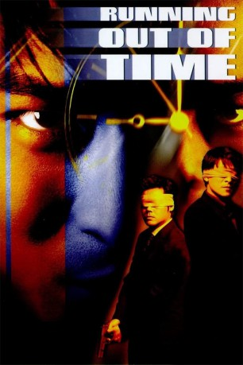

IMDB-Wertung: 7.4 / 10
IMDB-Wertung: 7.4 / 10  Metascore:
Metascore: 
Ein Film Schneller als der Tod und härter als das Gesetz
 IMDB-Wertung: 7.4 / 10 Metascore:
Ein Film Schneller als der Tod und härter als das Gesetz
Jahr: 1999
Dauer: 92 Minuten
FSK: 16
Land: Hong-Kong Studio: Rapid Eye MoviesTonspuren:
Untertitel: Deutsch,
Auflösung: 1080p (1920x1040) Größe: 7270 MB
Genre: Action, Thriller, Drama, Krimi
Regisseur: Johnnie To
Drehbuch: Nai-Hoi Yau, Laurent Courtiaud, Julien Carbon
Soundtrack: Ying-Wah Wong
Darsteller:
 Andy Lau als Cheung
Andy Lau als Cheung Ching Wan Lau als Inspector Ho Sheung-Sang
Ching Wan Lau als Inspector Ho Sheung-Sang Waise Lee als Baldy
Waise Lee als Baldy Shiu Hung Hui als Chief Inspector Wong Kai-fat
Shiu Hung Hui als Chief Inspector Wong Kai-fat Suet Lam als Suet, Baldy's Henchman
Suet Lam als Suet, Baldy's Henchman Wah Wo Wong als Security Guard
Wah Wo Wong als Security Guard Sau Kei Lee als Cheung's Doctor
Sau Kei Lee als Cheung's DoctorDatei: X:\HD-Eastern-Collections\Running Out of Time\Running Out of Time (1999, FSK16, 1920x1040).mkv seit 20.09.2019
Festplatte: HD Eastern+Western
 Alle Filme aus Gruppe 'HD-Eastern-Collections\Running Out of Time'
Alle Filme aus Gruppe 'HD-Eastern-Collections\Running Out of Time'